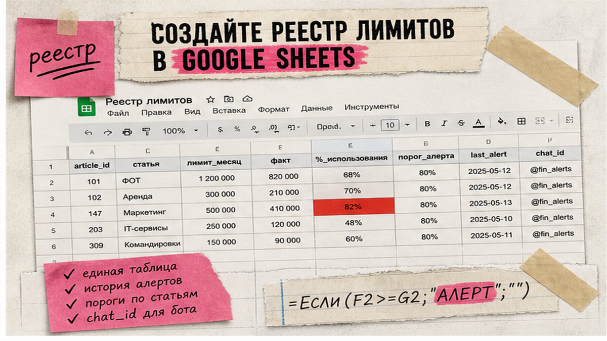
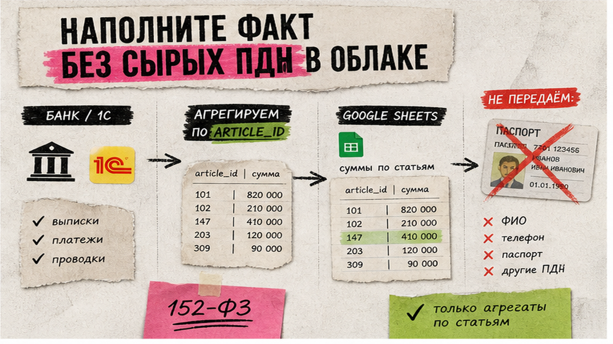

Перерасход по рекламе и командировкам узнаёте в пятницу из чата бухгалтерии, а не в день, когда статья пересекла 80% лимита. Контроль лимитов статей расходов с алертом в Telegram – реестр плана и факта в Google Sheets плюс сценарий n8n или Make, который пишет CFO или владельцу статьи до "сгорания" бюджета. Речь про управленческие лимиты по статьям ДДС/P&L, не про лимиты рассылок в мессенджере. Ниже соберёте контур: таблица, бот, порог, антиспам.
Я собираю такие контуры для финотделов, где бюджет живёт в таблицах, а не в ERP. Это не про P&L на 200 строк и не про personal expense-бот, куда сотрудники пишут траты из чата. Нужны 5–7 "горячих" статей, агрегатный факт без сырых ПДн и одно короткое сообщение при пересечении порога. Если уже есть жёсткий блок заявок в 1С – алерт можно повесить там; для МСБ быстрее стартовать с Sheets и бота.
Алерт окупается, когда расходы идут из нескольких источников (банк, карты, заявки), а отвечает CFO или финконтролёр. Цель: узнать о 80% лимита в день пересечения, а не на закрытии месяца.
Не путайте пороговый алерт с еженедельным дайджестом собственнику: дайджест – регулярная сводка, этот контур – событие при пересечении порога по статье. Telegram – быстрый пуш тому, кто решает: стоп, перераспределение или эскалация.
Сделайте: начните с 5–7 статей, где перерасход уже был. Не делайте: тащить в первый релиз весь план-факт на 80 строк.

Реестр – как журнал проводок по бюджету: одна строка = одна статья за месяц. Лист expense_limits:
| Колонка | Зачем | Пример |
|---|---|---|
| article_code | Стабильный код статьи | ADV_01 |
| article_name | Человекочитаемое имя | Контекстная реклама |
| period | Месяц лимита (YYYY-MM) | 2026-08 |
| limit_amount | План на период | 450 000 |
| fact_amount | Факт на дату | 382 000 |
| usage_pct | Формула fact/limit | 0.85 |
| threshold_pct | Порог алерта | 0.8 |
| owner | Кто отвечает | маркетинг / CFO |
| last_alert | Антиспам (дата пуша) | 2026-08-12 |
Порог 0.8 – рабочий дефолт budget-трекеров на n8n: предупреждение до исчерпания. Для второго уровня: 1.0 = "лимит исчерпан", опционально 1.1 = эскалация собственнику. Коды статей удобно брать из справочника категорий ДДС, чтобы не плодить синонимы.
Сделайте: один лист на текущий месяц с заполненным period. Не делайте: смешивать месяцы без фильтра – n8n начнёт алертить по устаревшему плану.

Лист raw_expense – staging: код статьи, сумма, дата. Источник – банк с категориями, выгрузка 1С или свод заявок. Реестр считает fact_amount через SUMIFS. ФИО, ИНН, номера карт и полные выписки в облако не кладите.
Токен бота и OAuth Google – только в credentials n8n/Make, не в ячейках. Self-hosted n8n – как сейф в офисе, если политика запрещает SaaS. Правила маскирования – в гайде по обезличиванию данных.
Не опрашивайте Sheets каждую минуту: у Google Sheets API порядка 300 read/write запросов в минуту на проект и 60 на пользователя; при превышении – HTTP 429. Для алерта хватает одного прогона в сутки после импорта факта.
Сделайте: raw_expense без ПДн + формулы на expense_limits. Не делайте: класть PDF выписок в Drive и гонять OCR через сторонние модели на боевых данных.
n8n или Make – супер-Excel: по расписанию читают строки выше порога и шлют сообщение. API – курьер между таблицей и чатом. Выбор стека – по тому, что уже используете; обзор – в автоматизации финансов на no-code.
/newbot: имя и username (5–32 символа, латиница/цифры/_, оканчивается на bot). Access Token – сразу в credentials n8n.chat_id через getUpdates (обновления хранятся не дольше 24 часов) или Telegram Trigger. Webhook и getUpdates одновременно не включайте.expense_limits на текущий period: лимиты, порог 0.8, last_alert пустой. Факт – формулами из raw_expense.usage_pct >= threshold_pct AND (last_alert пуст OR прошло N дней). Без антиспама бот будет писать каждый день одно и то же.last_alert = сегодня.Схема: Выписка/1С → raw_expense → формулы fact и usage_pct → n8n Schedule → фильтр порога → Telegram → запись last_alert → разбор перерасходов
Пример текста без контрагентов и реквизитов:
Лимит расходов: ADV_01 Контекстная реклама
Период: 2026-08
Факт: 382 000 / лимит 450 000 (85%)
Owner: маркетинг
Действие: согласовать доп. бюджет или стоп кампанийРазборы сценариев – в Telegram "Финансист, который кодит".
Сделайте: один сценарий, один чат, антиспам через last_alert. Не делайте: алерт на каждую проводку и personal tracker "сотрудник пишет сумму в бота".
Поднимите fact_amount выше порога на тестовой статье и запустите workflow вручную. Должно прийти одно сообщение, last_alert записаться. На следующий день без роста факта – тишина. Сверьте SUMIFS с источником.
period.Контроль первой недели: сколько алертов, сколько решений (стоп / перенос / доп. лимит), сколько ложных. Больше пяти пушей в день – сужайте список статей или поднимайте порог.
Сделайте: тест на одной строке перед продом. Не делайте: включать Schedule на весь реестр без тестовой статьи.
Разборы план-факт и центров затрат – в закрытом клубе KODA. Сначала надёжный факт, один порог, один чат – без обещаний блока оплаты в банке и автосогласования в 1С на первой неделе.
Сделайте: эскалацию после недели без ложных срабатываний. Не делайте: подменять пороговый алерт "красивым дайджестом".
expense_limits.raw_expense без ПДн и формулы usage_pct.last_alert.Материалы по финконтуру – на koda-fd.ru.
Да: Google Sheets + n8n или Make по шагам выше. Код не обязателен. Apps Script – альтернатива без n8n, если всё в одном Google-аккаунте. Алерт по готовому листу – задача финансиста.
Реестр + бот + один сценарий на 5–7 статей – обычно один рабочий день. Факт из банка или 1С – ещё 1–3 дня. Полный plan-факт по всем центрам не смешивайте с первым алертом.
В сообщении – код статьи, суммы, период и owner. Токен бота и OAuth – только в credentials. Для жёстких политик – self-hosted n8n и обезличенный staging. ФИО, ИНН и карты в облачный лист не кладите.
80% – ранний стоп; 100% – "лимит исчерпан". Два порога лучше одного позднего. Для рекламы можно 90%/100%, для аренды – 95%/100%; подстройте после месяца по ложным срабатываниям.
Шум убивает реакцию. Алерт по агрегату статьи за период плюс last_alert: одно событие при пересечении порога, не пуш на каждый платёж.
Дайджест – регулярная сводка. Этот контур – событие: статья пересекла порог. Оба полезны, роли разные; не заменяйте одно другим.
Для MVP нет. Sheets + n8n Cloud или self-hosted достаточно. ERP имеет смысл при жёстком блоке заявок – тогда алерт логичнее там, а не дублем в Sheets.